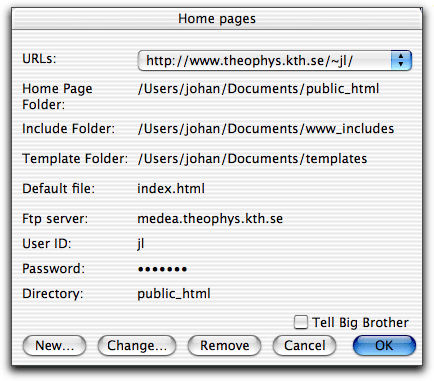
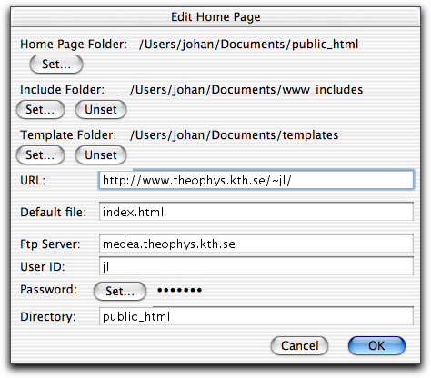
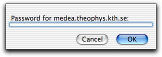

There are several functions in HTML mode for maintaining one or more www sites. To be able to use these functions in the best way you have to tell Alpha which folder contains the files of a www site. To do this use in the submenu of the HTML menu. The idea is that each of those folders, together with their subfolders, should contain all your html files at a server and be a mirror of your home page at the corresponding server.

When you select from the menu you are presented with a dialog window which looks like the one above. (This is actually what it looks like after you have given some information. At first a few things are absent.) In this window you have the following:
URLs: a menu with all home pages you have a folder for on your disk. The rest of the things are information related to this home page and are described in detail below.
At the bottom there are a couple buttons:
New: To define a new home page folder. You are presented with a second dialog as shown below.
Change: To change the home page selected in the menu.
Remove: To remove the home page selected in the menu.
Tell Big Brother: If you check this check box, the URL mappings will be changed in Big Brother's settings, when you click OK. Big Brother is told which home page folders map to which URLs. Big Brother is a shareware program for checking links by François Pottier, Francois.Pottier@inria.fr. You can get Big Brother from his home page. Read more about how to use Big Brother together with Alpha in the section Checking Links.

In the second dialog which appears when you click 'New' or 'Change' you can specify:
Home Page Folder: The folder containing all the files of your home page.
Include Folder: A folder where you can put your files to be dynamically included. To define an include folder is optional and only needed if you want to use dynamically included files. Read about dynamically included files in the section Include files.
Template folder: A folder with templates to use when creating new HTML documents. To define a template folder is optional. Read about how to use templates in the section Creating a new document.
URL: The URL to your home page, for
example
http://www.theophys.kth.se/~jl/
Default file: The file which is used if a link points to a directory. This name depends on the configuration of your server, but is often index.html.
Ftp Server: The ftp server which you upload your files to. If you specify one you can upload your files using the submenu in the HTML Utilities menu.
User ID: The name of your account on the machine you upload files to.
Password: Your password. Unfortunately Alpha doesn't support textboxes where bullets are inserted, so the password has to be given in a separate dialog where the textbox is made no narrow it is impossible to see what you type, see below. Click the 'Set...' button to set your password. Note! Only specify your password here if it's safe to do so. Alpha saves the password in plain text in its preference file. If you don't specify it here you can give it when you want to upload a file.
Directory: The directory of your home page relative to your home directory.
The minimum information you need to provide is the home page folder, server URL, and default file. Everything else is optional.